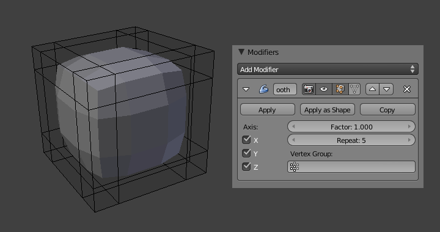

平滑修改器–knight翻译¶
The Smooth Modifier smooths a mesh by flattening the angles between adjacent faces in it, just like in Edit Mode. It smooths without subdividing the mesh - the number of vertices remains the same.

Smooth modifier applied to a subdivided cube.
This modifier is not limited to smoothing, though. Its control factor can be configured outside the (0.0 to 1.0) range (including negative values), which can result in interesting deformations.
选项¶
- X、Y、Z轴
开启或关闭修改器在X、Y、Z轴方向上的应用。
- 因子
- The factor to control the smoothing amount. Higher values will increase the effect. Values outside this range (above 1.0 or below 0.0) distort the mesh.
- 重复
平滑的迭代次数，等同于按 平滑 按钮的次数。
- 顶点组
顶点组名，用来限制仅对一组顶点起效。通过绘制顶点权重达到选择性的、实时的平滑或增强效果。